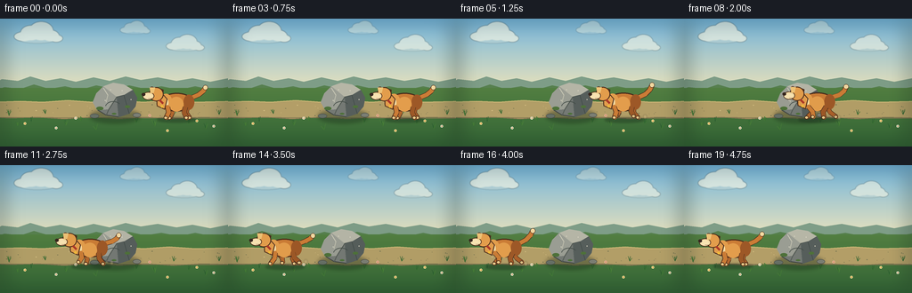
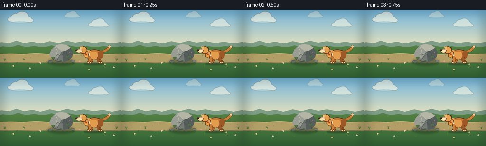

CODING AGENTS AS PIXEL WORLD MODELS
traex/DeepSeek-V4.1-Flash · dynamic_spatial_relationship_0004
点击播放 · 原生 RGB 像素
逐轮保存的候选
回放视频、检查图与代码变化。
每份候选均可单独播放。实际图片检查记录在下方工具轨迹中。
候选 01播放与检查图
点击播放 · 原生 RGB 像素


展开代码变化
--- 上一保存版本
+++ 本次保存版本
@@ -0,0 +1,567 @@
+from __future__ import annotations
+
+import math
+import random
+from pathlib import Path
+
+import numpy as np
+from PIL import Image, ImageDraw, ImageFilter
+
+import artifact_io
+
+
+W, H = 256, 144
+N, FPS = 20, 4.0
+SS = 4
+RW, RH = W * SS, H * SS
+
+BG_TOP = np.array([115, 180, 219], dtype=np.float32)
+BG_HORIZON = np.array([231, 225, 188], dtype=np.float32)
+GROUND_TOP = np.array([119, 157, 80], dtype=np.float32)
+GROUND_BOTTOM = np.array([51, 101, 53], dtype=np.float32)
+
+
+def s(value: float) -> int:
+ return int(round(value * SS))
+
+
+def box(x0: float, y0: float, x1: float, y1: float) -> tuple[int, int, int, int]:
+ return s(x0), s(y0), s(x1), s(y1)
+
+
+def points(values):
+ return [(s(x), s(y)) for x, y in values]
+
+
+def clamp(value: float, lo: float = 0.0, hi: float = 1.0) -> float:
+ return max(lo, min(hi, value))
+
+
+def smoothstep(value: float) -> float:
+ value = clamp(value)
+ return value * value * (3.0 - 2.0 * value)
+
+
+def mix(a, b, amount: float):
+ return tuple(int(round(x + (y - x) * amount)) for x, y in zip(a, b))
+
+
+def color(value, alpha: int = 255):
+ return tuple(int(v) for v in value) + (alpha,)
+
+
+def vertical_gradient(top: np.ndarray, bottom: np.ndarray, y0: int, y1: int) -> Image.Image:
+ t = np.linspace(0.0, 1.0, y1 - y0, dtype=np.float32)[:, None, None]
+ row = top[None, None, :] * (1.0 - t) + bottom[None, None, :] * t
+ arr = np.repeat(row, RW, axis=1).astype(np.uint8)
+ return Image.fromarray(arr, "RGB")
+
+
+def draw_cloud(draw: ImageDraw.ImageDraw, cx: float, cy: float, scale: float, opacity: int):
+ cloud_color = (249, 248, 230, opacity)
+ shadow_color = (218, 226, 216, opacity // 2)
+ draw.ellipse(box(cx - 18 * scale, cy + 2 * scale, cx + 18 * scale, cy + 8 * scale), fill=shadow_color)
+ for dx, dy, rx, ry in [
+ (-15, 1, 10, 5),
+ (-7, -3, 11, 8),
+ (4, -5, 13, 10),
+ (14, 0, 9, 6),
+ (20, 3, 7, 4),
+ ]:
+ draw.ellipse(
+ box(cx + (dx - rx) * scale, cy + (dy - ry) * scale, cx + (dx + rx) * scale, cy + (dy + ry) * scale),
+ fill=cloud_color,
+ )
+
+
+def hill_polygon(points_xy, fill, outline=None):
+ return points(points_xy), fill, outline
+
+
+def make_background() -> Image.Image:
+ image = Image.new("RGB", (RW, RH), (0, 0, 0))
+ sky = vertical_gradient(BG_TOP, BG_HORIZON, 0, s(79))
+ image.paste(sky, (0, 0))
+
+ clouds = Image.new("RGBA", (RW, RH), (0, 0, 0, 0))
+ cloud_draw = ImageDraw.Draw(clouds)
+ draw_cloud(cloud_draw, 42, 19, 1.05, 165)
+ draw_cloud(cloud_draw, 207, 30, 0.82, 140)
+ draw_cloud(cloud_draw, 151, 12, 0.65, 100)
+ clouds = clouds.filter(ImageFilter.GaussianBlur(s(0.45)))
+ image = Image.alpha_composite(image.convert("RGBA"), clouds)
+
+ draw = ImageDraw.Draw(image)
+
+ # Distant layered hills give the static camera a strong sense of depth.
+ far = [
+ (-10, 75),
+ (2, 68),
+ (20, 70),
+ (34, 65),
+ (51, 70),
+ (68, 67),
+ (85, 71),
+ (105, 66),
+ (123, 70),
+ (141, 65),
+ (158, 69),
+ (177, 66),
+ (198, 70),
+ (216, 67),
+ (236, 71),
+ (266, 65),
+ (266, 86),
+ (-10, 86),
+ ]
+ draw.polygon(points(far), fill=(126, 157, 135))
+
+ middle = [
+ (-10, 82),
+ (5, 77),
+ (23, 79),
+ (38, 74),
+ (55, 79),
+ (73, 76),
+ (90, 80),
+ (108, 75),
+ (127, 79),
+ (145, 75),
+ (163, 79),
+ (181, 76),
+ (201, 80),
+ (219, 76),
+ (238, 80),
+ (266, 75),
+ (266, 91),
+ (-10, 91),
+ ]
+ draw.polygon(points(middle), fill=(87, 128, 79))
+
+ near_bank = [
+ (-10, 88),
+ (10, 84),
+ (30, 87),
+ (50, 84),
+ (72, 88),
+ (94, 85),
+ (116, 88),
+ (139, 84),
+ (161, 87),
+ (183, 84),
+ (204, 88),
+ (225, 85),
+ (246, 88),
+ (266, 85),
+ (266, 97),
+ (-10, 97),
+ ]
+ draw.polygon(points(near_bank), fill=(70, 111, 63))
+
+ ground = vertical_gradient(GROUND_TOP, GROUND_BOTTOM, 0, RH)
+ mask = Image.new("L", (RW, RH), 0)
+ mask_draw = ImageDraw.Draw(mask)
+ mask_draw.rectangle((0, s(78), RW, RH), fill=255)
+ image.paste(ground.convert("RGBA"), (0, 0), mask)
+ draw = ImageDraw.Draw(image)
+
+ # Worn dirt path supplies a readable horizontal stage for the action.
+ path = [
+ (-8, 94),
+ (23, 93),
+ (48, 94),
+ (76, 92),
+ (104, 94),
+ (132, 92),
+ (161, 94),
+ (190, 92),
+ (219, 94),
+ (264, 93),
+ (264, 112),
+ (226, 111),
+ (195, 113),
+ (164, 111),
+ (134, 113),
+ (103, 111),
+ (72, 113),
+ (42, 111),
+ (11, 112),
+ (-8, 111),
+ ]
+ draw.polygon(points(path), fill=(178, 158, 103, 255))
+ draw.line(points(path[:11]), fill=(201, 180, 116, 255), width=s(1.2))
+ draw.line(points(path[10:] + [path[10]]), fill=(132, 119, 82, 190), width=s(1.0))
+
+ rng = random.Random(41)
+ # Pebbles and path flecks.
+ for _ in range(34):
+ x = rng.uniform(2, 254)
+ y = rng.uniform(95, 111)
+ radius = rng.uniform(0.25, 0.75)
+ shade = rng.choice([(130, 119, 82), (211, 189, 130), (116, 116, 82)])
+ draw.ellipse(box(x - radius, y - radius * 0.55, x + radius, y + radius * 0.55), fill=shade + (180,))
+
+ # Grass clusters frame the path without intruding on the dog/rock silhouette.
+ grass_spots = [
+ (10, 109, 1.0),
+ (20, 121, 0.85),
+ (35, 116, 0.75),
+ (51, 107, 0.7),
+ (74, 120, 1.0),
+ (91, 115, 0.75),
+ (108, 125, 0.9),
+ (153, 117, 0.8),
+ (174, 121, 1.0),
+ (195, 108, 0.72),
+ (212, 118, 0.8),
+ (231, 124, 1.0),
+ (246, 108, 0.8),
+ ]
+ for gx, gy, size in grass_spots:
+ for blade in range(5):
+ spread = (blade - 2) * 1.25 * size
+ height = rng.uniform(4.0, 8.0) * size
+ tip_x = gx + spread + rng.uniform(-1.3, 1.3)
+ color_grass = rng.choice([(57, 112, 50), (72, 126, 55), (43, 94, 48)])
+ draw.line(
+ [(s(gx), s(gy)), (s(tip_x), s(gy - height))],
+ fill=color_grass + (225,),
+ width=max(1, s(0.45)),
+ )
+
+ flowers = [(28, 118), (63, 123), (85, 112), (168, 109), (188, 126), (221, 115), (240, 121)]
+ for fx, fy in flowers:
+ petal = rng.choice([(244, 224, 149), (231, 176, 159), (239, 239, 216)])
+ for angle in range(0, 360, 72):
+ a = math.radians(angle)
+ px = fx + math.cos(a) * 0.8
+ py = fy + math.sin(a) * 0.8
+ draw.ellipse(box(px - 0.75, py - 0.75, px + 0.75, py + 0.75), fill=petal + (240,))
+ draw.ellipse(box(fx - 0.55, fy - 0.55, fx + 0.55, fy + 0.55), fill=(196, 130, 53, 255))
+
+ # Soft foreground vignette, kept subtle so the small frame remains legible.
+ vignette = Image.new("L", (RW, RH), 0)
+ vd = ImageDraw.Draw(vignette)
+ vd.rectangle((0, 0, RW, RH), fill=60)
+ vd.rounded_rectangle(box(9, 7, 247, 137), radius=s(12), fill=0)
+ vignette = vignette.filter(ImageFilter.GaussianBlur(s(9)))
+ shade = Image.new("RGBA", (RW, RH), (20, 35, 26, 0))
+ shade.putalpha(vignette)
+ image = Image.alpha_composite(image, shade)
+
+ return image
+
+
+def draw_rock(image: Image.Image):
+ shadow_layer = Image.new("RGBA", (RW, RH), (0, 0, 0, 0))
+ shadow = ImageDraw.Draw(shadow_layer)
+ shadow.ellipse(box(101, 102, 157, 117), fill=(34, 58, 35, 120))
+ shadow_layer = shadow_layer.filter(ImageFilter.GaussianBlur(s(2.3)))
+ image = Image.alpha_composite(image, shadow_layer)
+
+ draw = ImageDraw.Draw(image)
+ outline = (67, 72, 69, 255)
+ body = [
+ (108, 84),
+ (116, 76),
+ (127, 72),
+ (139, 74),
+ (149, 80),
+ (154, 89),
+ (152, 99),
+ (145, 107),
+ (133, 111),
+ (119, 109),
+ (109, 103),
+ (104, 94),
+ ]
+ draw.polygon(points(body), fill=(116, 121, 116, 255), outline=outline, width=s(1.25))
+
+ lit_face = [(108, 84), (116, 76), (127, 72), (131, 88), (122, 102), (109, 103), (104, 94)]
+ draw.polygon(points(lit_face), fill=(154, 157, 147, 255))
+ top_face = [(116, 76), (127, 72), (139, 74), (149, 80), (139, 86), (131, 88)]
+ draw.polygon(points(top_face), fill=(181, 181, 166, 255))
+ right_face = [(139, 86), (149, 80), (154, 89), (152, 99), (145, 107), (133, 111), (131, 88)]
+ draw.polygon(points(right_face), fill=(86, 94, 91, 255))
+
+ draw.line(points([(131, 88), (122, 102), (119, 109)]), fill=(84, 91, 85, 230), width=s(0.9))
+ draw.line(points([(131, 88), (139, 86), (145, 107)]), fill=(66, 75, 72, 210), width=s(0.8))
+ draw.line(points([(116, 78), (121, 86), (119, 94)]), fill=(201, 200, 181, 190), width=s(0.65))
+ draw.arc(box(118, 93, 136, 106), 192, 325, fill=(66, 76, 70, 210), width=s(0.75))
+
+ # Small moss patches and speckles make the rock read as a natural object.
+ for cx, cy, rx, ry in [(112, 101, 4.0, 2.0), (143, 99, 3.0, 1.6), (128, 107, 2.4, 1.0)]:
+ draw.ellipse(box(cx - rx, cy - ry, cx + rx, cy + ry), fill=(78, 113, 58, 205))
+ for cx, cy, r in [(124, 80, 0.55), (137, 81, 0.45), (118, 92, 0.4), (147, 91, 0.5)]:
+ draw.ellipse(box(cx - r, cy - r, cx + r, cy + r), fill=(210, 207, 190, 180))
+
+ # A couple of grounded stones soften the rock's base.
+ draw.ellipse(box(101, 107, 111, 112), fill=(102, 111, 101, 255), outline=(67, 72, 69, 255), width=s(0.55))
+ draw.ellipse(box(149, 106, 158, 111), fill=(123, 126, 115, 255), outline=(67, 72, 69, 255), width=s(0.55))
+ return image
+
+
+def thick_curve(draw: ImageDraw.ImageDraw, pts, fill, width, outline=(67, 42, 27, 255), outline_extra=1.0):
+ xy = points(pts)
+ draw.line(xy, fill=outline, width=s(width + outline_extra), joint="curve")
+ draw.line(xy, fill=fill, width=s(width), joint="curve")
+ radius = width / 2.0
+ for x, y in pts:
+ draw.ellipse(box(x - radius, y - radius, x + radius, y + radius), fill=fill)
+
+
+def draw_leg(
+ draw: ImageDraw.ImageDraw,
+ hip_x: float,
+ hip_y: float,
+ foot_x: float,
+ foot_y: float,
+ color_leg,
+ width: float,
+ knee_bias: float,
+ behind: bool = False,
+):
+ knee_x = (hip_x + foot_x) * 0.5 + knee_bias
+ knee_y = (hip_y + foot_y) * 0.5
+ outline = (78, 48, 28, 255) if not behind else (69, 43, 27, 255)
+ pts = [(hip_x, hip_y), (knee_x, knee_y), (foot_x, foot_y)]
+ draw.line(points(pts), fill=outline, width=s(width + 1.15), joint="curve")
+ draw.line(points(pts), fill=color_leg, width=s(width), joint="curve")
+ for px, py in pts:
+ draw.ellipse(box(px - width / 2, py - width / 2, px + width / 2, py + width / 2), fill=color_leg)
+ paw_w, paw_h = 4.4, 2.0
+ draw.ellipse(
+ box(foot_x - paw_w * 0.62, foot_y - paw_h, foot_x + paw_w * 0.38, foot_y + paw_h),
+ fill=(236, 202, 137, 255),
+ outline=outline,
+ width=s(0.65),
+ )
+
+
+def dog_geometry(phase: float, gait: float):
+ swing = math.sin(phase)
+ swing2 = math.sin(phase + math.pi)
+ lift1 = max(0.0, math.cos(phase))
+ lift2 = max(0.0, math.cos(phase + math.pi))
+ return {
+ "front_near": (-11.5 + 5.8 * swing * gait, -1.0 - 2.1 * lift1 * gait),
+ "front_far": (-7.5 + 5.4 * swing2 * gait, -0.8 - 1.7 * lift2 * gait),
+ "back_near": (11.5 + 5.5 * swing2 * gait, -0.9 - 1.8 * lift2 * gait),
+ "back_far": (15.0 + 5.3 * swing * gait, -1.0 - 2.0 * lift1 * gait),
+ "tail_phase": phase * 1.15,
+ }
+
+
+def draw_dog(image: Image.Image, cx: float, foot_y: float, phase: float, gait: float, run_direction: float = -1.0):
+ bob = -1.6 * abs(math.sin(phase * 2.0)) * gait
+ lean = -1.4 * gait
+ base_y = foot_y + bob
+ geo = dog_geometry(phase, gait)
+
+ shadow_layer = Image.new("RGBA", (RW, RH), (0, 0, 0, 0))
+ sd = ImageDraw.Draw(shadow_layer)
+ sd.ellipse(box(cx - 22, foot_y - 1.5, cx + 22, foot_y + 4.0), fill=(31, 55, 35, 115))
+ shadow_layer = shadow_layer.filter(ImageFilter.GaussianBlur(s(1.35)))
+ image = Image.alpha_composite(image, shadow_layer)
+
+ draw = ImageDraw.Draw(image)
+ outline = (73, 43, 27, 255)
+ gold = (202, 124, 54, 255)
+ gold_light = (226, 157, 76, 255)
+ gold_dark = (157, 88, 39, 255)
+ cream = (242, 216, 160, 255)
+ ear = (117, 65, 38, 255)
+
+ # Far legs sit behind the torso and read a little darker.
+ draw_leg(
+ draw,
+ cx - 6.5 + lean,
+ base_y - 12.0,
+ cx + geo["front_far"][0],
+ base_y + geo["front_far"][1],
+ (177, 103, 46, 255),
+ 4.0,
+ -2.4 * run_direction,
+ behind=True,
+ )
+ draw_leg(
+ draw,
+ cx + 12.0 + lean,
+ base_y - 12.0,
+ cx + geo["back_far"][0],
+ base_y + geo["back_far"][1],
+ (171, 96, 42, 255),
+ 4.2,
+ 2.4 * run_direction,
+ behind=True,
+ )
+
+ # Tail streams behind the body while running and curls up while standing.
+ tp = geo["tail_phase"]
+ tail_points = [
+ (cx + 18.0 + lean, base_y - 24.0),
+ (cx + 25.0 + lean, base_y - 27.0 + math.sin(tp) * 1.0 * gait),
+ (cx + 30.0 + lean, base_y - 31.0 + math.sin(tp + 0.45) * 2.0 * gait),
+ (cx + 32.5 + lean, base_y - 35.0 + math.sin(tp + 0.9) * 2.8 * gait),
+ ]
+ thick_curve(draw, tail_points, gold, 4.7, outline, 1.1)
+ draw.ellipse(
+ box(tail_points[-1][0] - 2.8, tail_points[-1][1] - 2.8, tail_points[-1][0] + 2.8, tail_points[-1][1] + 2.8),
+ fill=cream,
+ outline=outline,
+ width=s(0.6),
+ )
+
+ # Torso, haunch, and chest.
+ draw.ellipse(
+ box(cx - 18.0 + lean, base_y - 29.0, cx + 19.0 + lean, base_y - 8.0),
+ fill=gold,
+ outline=outline,
+ width=s(1.25),
+ )
+ draw.ellipse(box(cx + 8.0 + lean, base_y - 27.0, cx + 20.0 + lean, base_y - 10.0), fill=gold_dark)
+ draw.ellipse(box(cx - 18.5 + lean, base_y - 28.0, cx - 5.0 + lean, base_y - 11.0), fill=gold_light)
+ draw.ellipse(box(cx - 8.0 + lean, base_y - 24.5, cx + 8.0 + lean, base_y - 8.0), fill=gold_light)
+ # Chest blaze.
+ draw.ellipse(box(cx - 17.0 + lean, base_y - 24.0, cx - 9.0 + lean, base_y - 11.5), fill=cream)
+
+ # Near legs overlap the torso.
+ draw_leg(
+ draw,
+ cx - 10.0 + lean,
+ base_y - 13.0,
+ cx + geo["front_near"][0],
+ base_y + geo["front_near"][1],
+ gold,
+ 4.5,
+ -2.1 * run_direction,
+ )
+ draw_leg(
+ draw,
+ cx + 10.0 + lean,
+ base_y - 13.0,
+ cx + geo["back_near"][0],
+ base_y + geo["back_near"][1],
+ gold_dark,
+ 4.7,
+ 2.1 * run_direction,
+ )
+
+ # Neck and head, facing left.
+ head_x = cx - 23.0 + lean
+ head_y = base_y - 28.0
+ draw.polygon(
+ points(
+ [
+ (cx - 17.0 + lean, base_y - 30.0),
+ (cx - 10.0 + lean, base_y - 22.0),
+ (cx - 13.0 + lean, base_y - 10.0),
+ (cx - 22.0 + lean, base_y - 14.0),
+ (cx - 23.0 + lean, base_y - 27.0),
+ ]
+ ),
+ fill=gold_light,
+ outline=outline,
+ width=s(1.0),
+ )
+
+ # Floppy ear behind the face.
+ draw.polygon(
+ points(
+ [
+ (head_x + 2.5, head_y - 7.0),
+ (head_x + 8.5, head_y - 4.5),
+ (head_x + 8.0, head_y + 3.5),
+ (head_x + 4.0, head_y + 8.0),
+ (head_x + 0.5, head_y + 3.0),
+ ]
+ ),
+ fill=ear,
+ outline=outline,
+ width=s(0.95),
+ )
+ draw.ellipse(box(head_x - 8.0, head_y - 7.5, head_x + 8.5, head_y + 8.5), fill=gold_light, outline=outline, width=s(1.1))
+
+ # Muzzle and nose.
+ draw.ellipse(box(head_x - 15.0, head_y - 2.0, head_x - 2.0, head_y + 7.0), fill=cream, outline=outline, width=s(0.85))
+ draw.ellipse(box(head_x - 14.0, head_y + 0.0, head_x - 4.0, head_y + 6.0), fill=(247, 226, 177, 255))
+ draw.ellipse(box(head_x - 16.0, head_y - 1.0, head_x - 12.0, head_y + 2.5), fill=(54, 37, 30, 255))
+ draw.line([(s(head_x - 8.5), s(head_y + 5.3)), (s(head_x - 3.0), s(head_y + 5.0))], fill=(91, 55, 39, 255), width=s(0.55))
+
+ # Eye, brow, and a small cream blaze keep the face expressive.
+ draw.ellipse(box(head_x - 5.7, head_y - 5.0, head_x - 3.7, head_y - 2.4), fill=(42, 31, 24, 255))
+ draw.ellipse(box(head_x - 5.1, head_y - 4.7, head_x - 4.2, head_y - 3.9), fill=(248, 243, 210, 255))
+ draw.arc(box(head_x - 7.0, head_y - 8.0, head_x - 2.0, head_y - 3.0), 198, 332, fill=(91, 55, 39, 255), width=s(0.65))
+ draw.polygon(
+ points(
+ [
+ (head_x - 7.0, head_y - 7.0),
+ (head_x - 1.0, head_y - 7.2),
+ (head_x - 2.5, head_y - 1.0),
+ (head_x - 6.0, head_y - 0.2),
+ ]
+ ),
+ fill=(237, 194, 119, 180),
+ )
+
+ # A red collar is a strong, simple dog cue at this resolution.
+ draw.line(
+ [(s(cx - 19.0 + lean), s(base_y - 21.0)), (s(cx - 15.0 + lean), s(base_y - 17.0))],
+ fill=(171, 56, 40, 255),
+ width=s(2.2),
+ )
+ draw.ellipse(box(cx - 17.8 + lean, base_y - 15.2, cx - 14.8 + lean, base_y - 12.2), fill=(238, 185, 60, 255))
+
+ # Tiny motion accents behind the paws reinforce leftward running.
+ if gait > 0.12:
+ dust = Image.new("RGBA", (RW, RH), (0, 0, 0, 0))
+ dd = ImageDraw.Draw(dust)
+ strength = int(90 * gait)
+ for j in range(3):
+ dx = 11 + j * 5.2
+ dy = -1.8 - 1.3 * math.sin(phase + j * 1.7)
+ rr = 1.3 + 0.55 * j
+ dd.ellipse(box(cx + dx, base_y + dy - rr, cx + dx + rr * 1.5, base_y + dy + rr), fill=(218, 195, 139, strength))
+ dust = dust.filter(ImageFilter.GaussianBlur(s(0.7)))
+ image = Image.alpha_composite(image, dust)
+
+ return image
+
+
+def render_frame(index: int, background: Image.Image) -> Image.Image:
+ image = background.copy()
+ image = draw_rock(image)
+
+ # Hold on the right, cross, then hold on the left.
+ travel = clamp((index - 3) / 13.0)
+ eased = smoothstep(travel)
+ dog_x = 198.0 + (55.0 - 198.0) * eased
+
+ gait_in = smoothstep(clamp((index - 3) / 2.0))
+ gait_out = 1.0 - smoothstep(clamp((index - 16) / 2.0))
+ gait = gait_in * gait_out
+ phase = (index - 3) * 1.52
+ foot_y = 112.5 + 0.7 * abs(math.sin(phase * 2.0)) * gait
+ image = draw_dog(image, dog_x, foot_y, phase, gait)
+
+ # Gentle camera exposure drift keeps the five-second shot from feeling frozen.
+ if index:
+ arr = np.asarray(image, dtype=np.float32)
+ amount = 0.006 * math.sin(index * 0.42)
+ arr *= 1.0 + amount
+ image = Image.fromarray(np.clip(arr, 0, 255).astype(np.uint8), "RGBA")
+
+ frame = image.convert("RGB").resize((W, H), Image.Resampling.LANCZOS)
+ return np.asarray(frame, dtype=np.uint8)
+
+
+def main():
+ here = Path(__file__).resolve().parent
+ background = make_background()
+ frames = np.stack([render_frame(i, background) for i in range(N)])
+ artifact_io.save(frames, here)
+ print(f"saved {len(frames)} frames to {here / 'frames'} ({frames.shape}, {frames.dtype})")
+
+
+if __name__ == "__main__":
+ main()
可观测工具轨迹
实际执行的命令与返回图片。
命令 1exit 0
/bin/bash -c "pwd && rg --files -g '"'!**/.git/**'"'"
命令 2exit 0
/bin/bash -c 'cat prompt.txt'
命令 3exit 0
/bin/bash -c 'cat GENERATION_RULES.md'
命令 4exit 0
/bin/bash -c 'cat task_spec.json'
命令 5exit 0
/bin/bash -c "sed -n '1,240p' artifact_io.py"
命令 6exit 0
/bin/bash -c "sed -n '1,260p' player_template.html"
命令 7exit 0
/bin/bash -c "find . -maxdepth 2 -type f -printf '%p %s bytes\\n' | sort"
命令 8exit 0
/bin/bash -c "python - <<'PY' import importlib.util for m in ['numpy','PIL','cv2','imageio','matplotlib']: print(m, bool(importlib.util.find_spec(m))) PY"
命令 9exit 1
/bin/bash -c 'python generate.py'
命令 10exit 1
/bin/bash -c 'python generate.py'
命令 11exit 0
/bin/bash -c 'python generate.py'
命令 12exit 0
/bin/bash -c "python - <<'PY'
from PIL import Image
import numpy as np
from pathlib import Path
for p in [Path('inspection.png'),Path('transition_check.png')]:
im=Image.open(p); print(p, im.size, im.mode)
frames=np.stack([np.asarray(Image.open(f'frames/{i:02d}.png')) for i in range(20)])
print('frames', frames.shape, frames.dtype, 'min/max', frames.min(), frames.max())
print('mean rgb per selected', [(i, np.round(frames[i].mean((0,1)),1).tolist()) for i in [0,3,10,16,19]])
print('frame diffs', [round(float(np.abs(frames[i].astype(int)-frames[i-1].astype(int)).mean()),2) for i in range(1,20)])
PY"命令 13exit 0
/bin/bash -c 'command -v chafa || command -v viu || command -v jp2 || true'
命令 14exit 0
/bin/bash -c 'git status --short && find frames -maxdepth 1 -type f | wc -l && ls -lh pixels.npz index.html inspection.png transition_check.png'
命令 15exit 0
/bin/bash -c "python - <<'PY'
from PIL import Image
import numpy as np
for i in [0,2,3,10,16,18,19]:
a=np.asarray(Image.open(f'frames/{i:02d}.png')).astype(int)
r,g,b=a[...,0],a[...,1],a[...,2]
# Golden dog fur, excluding brown dirt and yellow flowers.
m=(r>150)&(r>g*1.18)&(g>b*1.20)&(b<150)
ys,xs=np.where(m)
print(i, 'dog_fur_bbox=', (int(xs.min()),int(ys.min()),int(xs.max()),int(ys.max())), 'centroid=', (round(float(xs.mean()),1),round(float(ys.mean()),1)), 'pixels=',len(xs))
PY"命令 16exit 0
/bin/bash -c "python -m py_compile generate.py && python - <<'PY'
import json, numpy as np
from pathlib import Path
from PIL import Image
spec=json.loads(Path('task_spec.json').read_text())
z=np.load('pixels.npz')['pixels']
assert z.shape == (spec['height'],spec['width'],spec['frames'])
assert len(list(Path('frames').glob('*.png'))) == spec['frames']
for i in range(spec['frames']):
im=Image.open(f'frames/{i:02d}.png')
assert im.size == (spec['width'],spec['height']) and im.mode == 'RGB'
assert Path('index.html').is_file() and Path('index.html').stat().st_size > 10000
print('validated:', z.shape, im.mode, im.size, 'frames=',spec['frames'], 'fps=',spec['fps'])
PY"保存候选 1 份；完成命令 16 次；可验证图片返回 0 张。原始 API 响应与完整日志保留在本地。